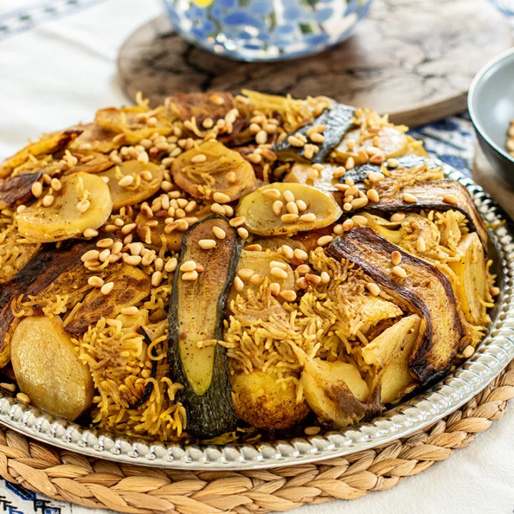

Maqluba is a traditional Arabic dish with layers of meat or chicken,
and vegetables seasoned with spices.
Place chicken in a large pot with 6 cups water, onion, 2 tablespoons allspice, ground cardamom, cardamom seeds, whole cloves and bay leaves. Bring to a boil, and cook until chicken is tender, about 40 minutes. Remove chicken, strain and reserve broth.
Soak rice in water while waiting for chicken to cook. When chicken is almost done, drain water off, and stir in 1 ½ tablespoons of allspice.
Heat oil in a skillet over medium-high heat. Fry potatoes and cauliflower in hot oil until browned. They do not need to fully cook.
Layer fried potatoes on the bottom of a separate pot. This is done so that the rice will not stick to the bottom of the pan. Add cauliflower and tomatoes, and sprinkle a handful of rice over the vegetables. Remove the bones from the chicken and place the chicken in the pot. Cover with remaining rice. Pour in reserved broth until it reaches a level about 1/2 inch above the level of the rice. Cover the pot, and cook over medium-low heat until rice is tender, about 1 hour.
Uncover the pot, and place a large round tray over the top. Invert so that the pan is upside down on top of the tray. Let stand for 5 minutes like this, then slowly remove the pot to let the food fall onto the tray.